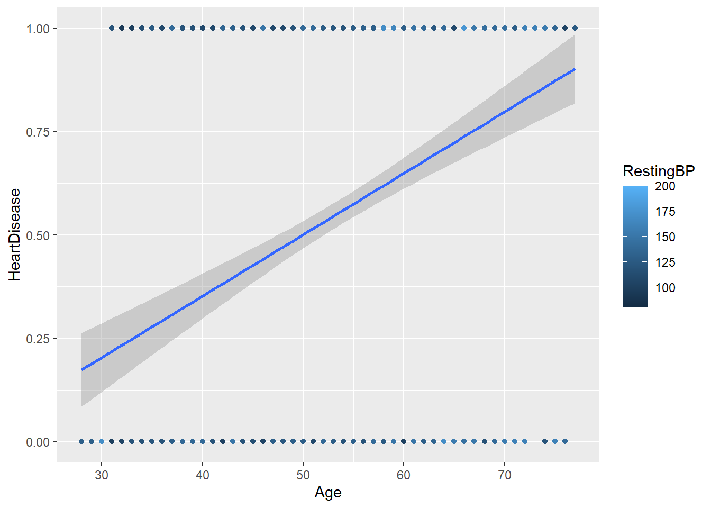
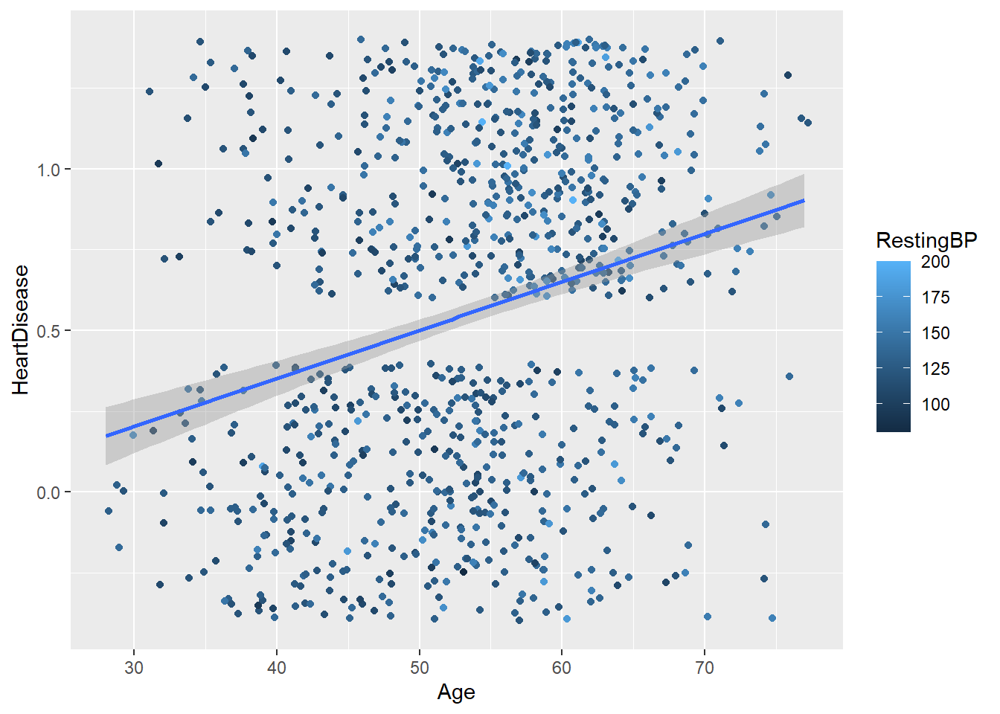

Warning: package 'tidyverse' was built under R version 4.5.1
Warning: package 'ggplot2' was built under R version 4.5.2
Warning: package 'tibble' was built under R version 4.5.1
Warning: package 'tidyr' was built under R version 4.5.1
Warning: package 'readr' was built under R version 4.5.1
Warning: package 'purrr' was built under R version 4.5.1
Warning: package 'dplyr' was built under R version 4.5.1
Warning: package 'stringr' was built under R version 4.5.1
Warning: package 'forcats' was built under R version 4.5.1
Warning: package 'lubridate' was built under R version 4.5.1
── Attaching core tidyverse packages ──────────────────────── tidyverse 2.0.0 ──
✔ dplyr 1.1.4 ✔ readr 2.1.5
✔ forcats 1.0.0 ✔ stringr 1.5.1
✔ ggplot2 4.0.0 ✔ tibble 3.3.0
✔ lubridate 1.9.4 ✔ tidyr 1.3.1
✔ purrr 1.1.0
── Conflicts ────────────────────────────────────────── tidyverse_conflicts() ──
✖ dplyr::filter() masks stats::filter()
✖ dplyr::lag() masks stats::lag()
ℹ Use the conflicted package (<http://conflicted.r-lib.org/>) to force all conflicts to become errors
heart_data <-read_csv("https://www4.stat.ncsu.edu/online/datasets/heart.csv") |>filter(RestingBP >0) #remove one value
Rows: 918 Columns: 12
── Column specification ────────────────────────────────────────────────────────
Delimiter: ","
chr (5): Sex, ChestPainType, RestingECG, ExerciseAngina, ST_Slope
dbl (7): Age, RestingBP, Cholesterol, FastingBS, MaxHR, Oldpeak, HeartDisease
ℹ Use `spec()` to retrieve the full column specification for this data.
ℹ Specify the column types or set `show_col_types = FALSE` to quiet this message.
heart_data |>select(HeartDisease, everything()) #Cholesterol has many values set to 0 so we ignore that
# A tibble: 917 × 12
HeartDisease Age Sex ChestPainType RestingBP Cholesterol FastingBS
<dbl> <dbl> <chr> <chr> <dbl> <dbl> <dbl>
1 0 40 M ATA 140 289 0
2 1 49 F NAP 160 180 0
3 0 37 M ATA 130 283 0
4 1 48 F ASY 138 214 0
5 0 54 M NAP 150 195 0
6 0 39 M NAP 120 339 0
7 0 45 F ATA 130 237 0
8 0 54 M ATA 110 208 0
9 1 37 M ASY 140 207 0
10 0 48 F ATA 120 284 0
# ℹ 907 more rows
# ℹ 5 more variables: RestingECG <chr>, MaxHR <dbl>, ExerciseAngina <chr>,
# Oldpeak <dbl>, ST_Slope <chr>
binary 1 -> has heart disease binary 0 -> does not have heart disease were going to try to model (P(Y=1| x variables) = probability of heart disease given some predictors
ggplot(heart_data, aes(x = Age, y = HeartDisease, color = RestingBP)) +geom_point() +geom_smooth(method ="lm")
`geom_smooth()` using formula = 'y ~ x'
Warning: The following aesthetics were dropped during statistical transformation:
colour.
ℹ This can happen when ggplot fails to infer the correct grouping structure in
the data.
ℹ Did you forget to specify a `group` aesthetic or to convert a numerical
variable into a factor?

looking at P(Y=1|x) = B-hat0 + B-hat1x probability of having heart disease given x which in this case is age
ggplot(heart_data, aes(x = Age, y = HeartDisease, color = RestingBP)) +geom_jitter() +geom_smooth(method ="lm")
`geom_smooth()` using formula = 'y ~ x'
Warning: The following aesthetics were dropped during statistical transformation:
colour.
ℹ This can happen when ggplot fails to infer the correct grouping structure in
the data.
ℹ Did you forget to specify a `group` aesthetic or to convert a numerical
variable into a factor?

obtain proportion with heart disease for different age groups
Next, we’ll set up our recipes for the data, standardizing these numeric variables
Model 1: Age and Sex as predictors Model 2: Age, Sex, ChestPainType, RestingBP and RestingECG as predictors Model 3: Age, Sex, ChestPainType, RestingBP, RestingECG, MaxHR, and ExerciseAngina
LR1_rec <-recipe(HeartDisease ~ Age + Sex, data = heart_train) |>step_normalize(Age) |>step_dummy(Sex)LR2_rec <-recipe(HeartDisease ~ Age + Sex + ChestPainType + RestingBP + RestingECG, data = heart_train) |>step_normalize(all_numeric(), -HeartDisease) |>step_dummy(Sex, ChestPainType, RestingECG)LR3_rec <-recipe(HeartDisease ~ Age + Sex + ChestPainType + RestingBP + RestingECG + MaxHR + ExerciseAngina, data = heart_train) |>step_normalize(all_numeric(), -HeartDisease) |>step_dummy(Sex, ChestPainType, RestingECG, ExerciseAngina)LR3_rec |>prep(heart_train) |>bake(heart_train) |>colnames()